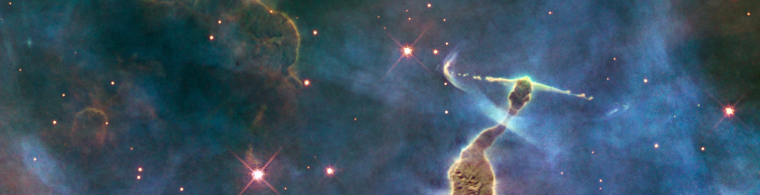

PhD Student · Department of Astronomy · Xiamen University
Hi, here is Shulan Yan My Chinese name is 鄢淑澜. I am a PhD student at the Department of Astronomy at Xiamen University. My advisor is Prof.Taotao Fang.
My research focuses on the evolution of multiphase gas during galaxy formation and evolution. Gas plays a fundamental role in the baryonic cycle of galaxies, constituting a major component of their baryonic content and regulating star formation. Nowadays, the Five-hundred-meter Aperture Spherical Radio Telescope (FAST) has made significant progress in detecting extragalactic atomic hydrogen (HI).
I use FAST data to study the HI content of galaxies in pairs and groups, aiming to understand how interactions and environments influence gas accretion, depletion, and star formation. In addition to working with public datasets, I actively lead and participate in observational programs, submitting proposals every year.